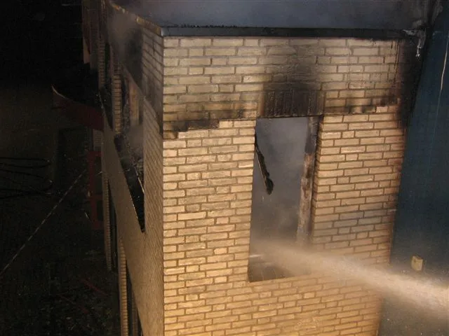

Home · Services · About · Contact · Reviews
Smoke and soot travel far beyond the room where the fire started — into walls, ceilings, and your HVAC system. Professional cleanup removes soot before it bonds permanently and stops your ducts from re-contaminating the house every cycle.

Specialized dry and wet cleaning of soot from walls, ceilings and surfaces — different soot types need different chemistry.
Typical time: 1-3 days depending on spread
Deep cleaning of smoke-stained walls and ceilings, including primer-sealing before repaint.
Typical time: 1-2 days
Full duct system cleaning after smoke exposure — otherwise the HVAC re-contaminates the whole house every cycle.
Typical time: Half day
Removal of sticky protein and wet-smoke residues that standard cleaning cannot lift.
Typical time: 1-3 days
Smoke from a living-room fire spreads through the hallway and into two bedrooms. Soot coats the walls and ceilings, and the HVAC ran during the fire. Cleanup takes 1–3 days: dry and wet soot removal, wall and ceiling cleaning, duct cleaning — soot removal $1,000–$4,000 plus ducts $300–$700 (national ranges).
Light surface soot sometimes — but soot is acidic and embeds quickly, and the wrong cleaning spreads it and can set stains permanently. Different soot types need different chemistry. Call a pro for anything beyond a small area.
Smoke odor hides in porous materials and the HVAC system. If your ducts ran during or after the fire, the system re-contaminates the house every cycle — duct cleaning plus fogging or ozone treatment is usually needed.
Typical national range $1,000–$4,000; light soot removal $400–$800 (PuroClean); heavy soot can add $2,000–$6,000 (Angi).
If the system ran during or after the fire, yes — soot and odor circulate through the ducts. Typical range $300–$700; $275–$800 (restorenearme.com).
Call now — a local pro assesses the soot type and starts cleanup the right way.
📞 Call (800) 555-0147 Now